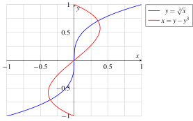

13 2024-12-20
Examen de Análisis III
Ejercicio 13.1 La temperatura de una placa de inducción térmica en cada punto \((x,y)\) de su superficie viene dada por la función \(T(x,y) = ye^{-x^2-2y^2}\).
¿Cuál es la tasa de variación instantánea de la temperatura en el punto \((0,0)\) si empezamos a movernos en la dirección en la que \(x\) decrece un tercio de lo que aumenta \(y\)?
¿En qué puntos la temperatura será máxima y mínima? ¿Cuál será la temperatura en esos puntos?
Usar el polinomio de Taylor de segundo grado en el punto \((1,0)\) para aproximar la temperatura en el punto \((0.9,0.1)\).
La tasa de variación instantánea la da la derivada direccional de \(T\) en \((0,0)\) siguiendo la dirección del vector \(\mathbf{v} =\left(-\frac{1}{3}, 1\right)\).
Calculamos primero el gradiente de la función.
\[\begin{align*} \frac{\partial T}{\partial x} &= ye^{-x^2-2y^2}\frac{\partial (-x^2-2y^2)}{\partial x} = ye^{-x^2-2y^2}(-2x) \\ \frac{\partial T}{\partial y} &= e^{-x^2-2y^2} + y\frac{\partial \left(e^{-x^2-2y^2}\right)}{\partial y} = e^{-x^2-2y^2} + ye^{-x^2-2y^2}\frac{\partial (-x^2-2y^2)}{\partial y} \\ &= e^{-x^2-2y^2} + ye^{-x^2-2y^2}(-4y) = e^{-x^2-2y^2}(1-4y^2) \end{align*}\]
Así pues, el gradiente es
\[\nabla T(x,y) = \left(e^{-x^2-2y^2}(-2xy), e^{-x^2-2y^2}(1-4y^2)\right),\]
y en el punto \((0,0)\) vale
\[ \nabla T(0,0) = \left(e^{-0^2-20^2}(-2\cdot 0), e^{-0^2-20^2}(1-4\cdot 0^2)\right) = (0, 1). \]
Por tanto, la derivada direccional es
\[\begin{align*} T_{\mathbf{v}}(0,0) &= \nabla T(0,0)\frac{\left(-\frac{1}{3}, 1\right)}{\left|\left(-\frac{1}{3}, 1\right)\right|} = (0,1)\frac{\left(-\frac{1}{3}, 1\right)}{\sqrt{\left(-\frac{1}{3}\right)^2+1^2}} \\ & = (0,1)\left(-\frac{1}{\sqrt{10}}, \frac{3}{\sqrt{10}}\right) = \frac{3}{\sqrt{10}}. \end{align*}\]
Para encontrar los puntos críticos de la función, igualamos el gradiente al vector nulo y resolvemos el sistema de ecuaciones.
\[\begin{align*} \frac{\partial T}{\partial x} &= 0 \Rightarrow -2xye^{-x^2-2y^2} = 0 \Rightarrow x = 0 \mbox{ o } y = 0, \\ \frac{\partial T}{\partial y} &= 0 \Rightarrow (1-4y^2)e^{-x^2-2y^2} = 0 \Rightarrow y = \pm \frac{1}{2}. \end{align*}\]
Por tanto, los puntos críticos son \((0,1/2)\) y \((0,-1/2)\).
Para determinar si son máximos o mínimos, calculamos el determinante de la matriz hessiana en cada punto crítico.
\[\begin{align*} \nabla^2T(x,y) &= \begin{pmatrix} \frac{\partial^2 T}{\partial x^2} & \frac{\partial^2 T}{\partial x\partial y} \\ \frac{\partial^2 T}{\partial y\partial x} & \frac{\partial^2 T}{\partial y^2} \end{pmatrix} \\ &= \begin{pmatrix} \frac{\partial}{\partial x}(-2xye^{-x^2-2y^2}) & \frac{\partial}{\partial x}(1-4y^2)e^{-x^2-2y^2} \\ \frac{\partial}{\partial y}(-2xye^{-x^2-2y^2}) & \frac{\partial}{\partial y}(1-4y^2)e^{-x^2-2y^2} \end{pmatrix} \\ &= \begin{pmatrix} 4x^2ye^{-x^2 - 2y^2} - 2ye^{-x^2 - 2y^2} & 8xy^2e^{-x^2 - 2y^2} - 2xe^{-x^2 - 2y^2} \\ 8xy^2e^{-x^2 - 2y^2} - 2xe^{-x^2 - 2y^2} & 16y^3e^{-x^2 - 2y^2} - 12ye^{-x^2 - 2y^2} \end{pmatrix}. \end{align*}\]
La matriz hessiana en el punto \((0,1/2)\) es
\[\begin{align*} \nabla^2T(0,1/2) &= \begin{pmatrix} 4\cdot 0^2\frac{1}{2}e^{-0^2 - 2\left(\frac{1}{2}\right)^2} - 2\frac{1}{2}e^{-0^2 - 2\left(\frac{1}{2}\right)^2} & 8\cdot 0\left(\frac{1}{2}\right)^2e^{-0^2 - 2\left(\frac{1}{2}\right)^2} - 2\cdot 0e^{-0^2 - 2*\left(\frac{1}{2}\right)^2} \\ 8\cdot 0\left(\frac{1}{2}\right)^2e^{-0^2 - 2\left(\frac{1}{2}\right)^2} - 2\cdot 0e^{-0^2 - 2*\left(\frac{1}{2}\right)^2} & 16\left(\frac{1}{2}\right)^3e^{-0^2 - 2\left(\frac{1}{2}\right)^2} - 12\frac{1}{2}e^{-0^2 - 2\left(\frac{1}{2}\right)^2} \end{pmatrix}\\ &= \begin{pmatrix} -e^{-1/2} & 0 \\ 0 & -4e^{-1/2} \end{pmatrix}. \end{align*}\]
y su determinante vale \(H(0,1/2) = -e^{-1/2}(-4e^{-1/2}) = 4e^{-1}\), que es positivo, por lo que en el punto \((0,1/2)\) hay un extremo relativo, y como \(\frac{\partial^2 T}{\partial x^2}(0,1/2) = -e^{-1/2} < 0\), es un máximo relativo. La temperatura en este punto vale \(T(0,1/2) = 1/2e^{-0^2 - 2\left(\frac{1}{2}\right)^2} = 1/2e^{-1/2} \approx 0.3033\).
En el punto \((0,-1/2)\) la matriz hessiana es
\[\begin{align*} \nabla^2T(0,-1/2) &= \begin{pmatrix} 4\cdot 0^2\frac{-1}{2}e^{-0^2 - 2\left(\frac{-1}{2}\right)^2} - 2\frac{-1}{2}e^{-0^2 - 2\left(\frac{-1}{2}\right)^2} & 8\cdot 0\left(\frac{-1}{2}\right)^2e^{-0^2 - 2\left(\frac{-1}{2}\right)^2} - 2\cdot 0e^{-0^2 - 2*\left(\frac{-1}{2}\right)^2} \\ 8\cdot 0\left(\frac{-1}{2}\right)^2e^{-0^2 - 2\left(\frac{-1}{2}\right)^2} - 2\cdot 0e^{-0^2 - 2*\left(\frac{-1}{2}\right)^2} & 16\left(\frac{-1}{2}\right)^3e^{-0^2 - 2\left(\frac{-1}{2}\right)^2} - 12\frac{-1}{2}e^{-0^2 - 2\left(\frac{-1}{2}\right)^2} \end{pmatrix}\\ &= \begin{pmatrix} e^{-1/2} & 0 \\ 0 & 4e^{-1/2} \end{pmatrix}. \end{align*}\]
y su determinante vale \(H(0,-1/2) = e^{-1/2}4e^{-1/2} = 4e^{-1}\), que es positivo, por lo que en el punto \((0,-1/2)\) también hay un extremo relativo, y como \(\frac{\partial^2 T}{\partial x^2}(0,1/2) = e^{-1/2} > 0\), es un mínimo relativo. La temperatura en este punto vale \(T(0,-1/2) = -1/2e^{-0^2 - 2\left(\frac{-1}{2}\right)^2} = -1/2e^{-1/2} \approx -0.3033\).
La fórmula del polinomio de Taylor de segundo grado en el punto \((1,0)\) es
\[ P_T^2(x,y) = T(1,0) + \nabla T(1,0) (x-1, y) + \frac{1}{2} \left((x-1,y)\nabla^2T(1,0)\begin{pmatrix}x-1 \\ y\end{pmatrix}\right). \]
Calculamos el gradiente en el punto \((1,0)\)
\[ \nabla T(1,0) = \left(e^{-1^2-2\cdot 0^2}(-2\cdot 1\cdot 0), e^{-1^2-2\cdot 0^2}(1-4\cdot 0^2)\right) = (0,e^{-1}), \]
y la matriz hessiana en el punto \((1,0)\)
\[\begin{align*} \nabla^2T(1,0) &= \begin{pmatrix} 4\cdot 1^2\cdot 0e^{-1^2 - 2\cdot 0^2} - 2\cdot 0e^{-1^2 - 2\cdot 0^2} & 8\cdot 1\cdot 0^2e^{-1^2 - 2\cdot 0^2} - 2\cdot 1e^{-1^2 - 2\cdot 0^2} \\ 8\cdot 1\cdot 0^2e^{-1^2 - 2\cdot 0^2} - 2\cdot 1e^{-1^2 - 2\cdot 0^2} & 16\cdot 0^3e^{-1^2 - 2\cdot 0^2} - 12\cdot 0e^{-1^2 - 2\cdot 0^2} \end{pmatrix} \\ &= \begin{pmatrix} 0 & -2e^{-1} \\ -2e^{-1} & 0 \end{pmatrix}. \end{align*}\]
Sustituyendo en la fórmula del polinomio de Taylor de segundo grado, obtenemos
\[\begin{align*} P_T^2(x,y) &= 0 + (0,e^{-1})(x-1, y) + \frac{1}{2} \left((x-1,y)\begin{pmatrix}0 & -2e^{-1} \\ -2e^{-1} & 0\end{pmatrix}\begin{pmatrix}x-1 \\ y\end{pmatrix}\right) \\ &= e^{-1}y - 2e^{-1}(x-1)y. \end{align*}\]
Y la aproximación de la temperatura en el punto \((0.9,0.1)\) es
\[ T(0.9,0.1) \approx P_T^2(0.9,0.1) = e^{-1}0.1 - 2e^{-1}(0.9-1)0.1 = 0.1e^{-1} + 0.02e^{-1} \approx 0.0441455 \]
Ejercicio 13.2 Un coche circula por una circuito elíptico cuya trayectoria viene dada por la función vectorial \(f(t)=(400\cos(10t), 100\operatorname{sen}(10t))\), donde \(t\) está dado en minutos y las coordenadas de \(f\) en metros.
Calcular la rapidez del vehículo en el instante \(t=\pi\).
Calcular la curvatura de la trayectoria en ese instante.
Calcular la componente tangencial del vector aceleración en ese instante.
Calcular la componente normal del vector aceleración en ese instante.
Suponiendo que los neumáticos no proporcionan ningún agarre (por ejemplo porque hay hielo en la carretera), ¿cuál es el mínimo ángulo que debería tener el peralte de la curva en este instante para que el coche no se salga del circuito? Tómese una aceleración debida a la gravedad de \(9.8\) m/s\(^2\).
La rapidez del vehículo en el instante \(t=\pi\) es módulo del vector velocidad en ese instante, así que calculamos primero el vector velocidad.
\[ \mathbf{f}'(t) = (-4000\sin(10t), 1000\cos(10t)) \]
y en el instante \(t=\pi\) vale
\[ \mathbf{f}'(\pi) = (-4000\sin(10\pi), 1000\cos(10\pi)) = (0,1000). \]
por lo que la rapidez es \(|\mathbf{f}'(\pi)| = \sqrt{0^2+1000^2} = 1000\) m/min.
La curvatura de la trayectoria en el instante \(t\) viene dada por la fórmula
\[ \kappa(t) = \frac{|\mathbf{f}'(t)\times \mathbf{f}''(t)|}{|\mathbf{f}'(t)|^3}. \]
Calculamos primero el vector aceleración.
\[ \mathbf{f}''(t) = (-40000\cos(10t), -10000\sin(10t)) \]
que en el instante \(t=\pi\) vale
\[ \mathbf{f}''(\pi) = (-40000\cos(10\pi), -10000\sin(10\pi)) = (-40000,0). \]
Por tanto, la curvatura en el instante \(t=\pi\) es
\[ \kappa(\pi) = \frac{|(0,1000,0)\times (-40000,0,0)|}{|(0,1000)|^3} = \frac{|(0,0,4\cdot 10^7)|}{10^9} = \frac{4\cdot 10^7}{1000^9} = 0.04. \]
La componente tangencial del vector aceleración en el instante \(t=\pi\) es
\[ a_T(\pi) = \frac{\mathbf{f}'(\pi)\cdot \mathbf{f}''(\pi)}{|\mathbf{f}'(\pi)|} = \frac{(0,1000)\cdot (-40000,0)}{1000} = \frac{-40000\cdot 0 + 1000\cdot 0}{1000} = 0. \]
La componente normal del vector aceleración en el instante \(t=\pi\) es
\[ a_N(\pi) = \frac{|\mathbf{f}'(\pi)\times \mathbf{f}''(\pi)|}{|\mathbf{f}'(\pi)|} = \frac{|(0,0,4\cdot 10^7)|}{10^3} = \frac{4\cdot 10^7}{10^3} = 40000. \]
La fuerza centrípeta que debe ejercer el peralte de la curva para que el coche no se salga del circuito es la misma pero opuesta a la fuerza centrífuga del movimiento del coche. Como la fuerza centrífuga es la componente normal del vector aceleración que hemos calculado antes, se tiene que la fuerza centrípeta es \(F_c = 40000m\) kg\(\cdot\) m/min\(^2 = 40000/3600\) kg\(\cdot\)m/s\(^2\), donde \(m\) es la masa del coche. Por otro lado, la fuerza \(F\) que ejerce la carretera sobre el coche se descompone en la componente gravitatoria \(F_g=mg\), que compensa la fuerza de la gravedad, y la componente normal a la componente gravitatoria, que es la fuerza centrípeta \(F_c\). Si \(\theta\) es el ángulo del peralte de la carretera, se cumple que \(F_g = F\cos(\theta)\) y \(F_c = F\sin(\theta)\). Así que la fuerza centrípeta es \(F_c = F\sin(\theta) = 40000m\), y la fuerza gravitatoria es \(F_g = F\cos(\theta) = mg\). Resolviendo el sistema de ecuaciones, se tiene que el peralte de la curva en este instante para que el coche no se salga del circuito es
\[ \theta = \arctan\left(\frac{F_c}{F_g}\right) = \arctan\left(\frac{40000/3600m}{mg}\right) = \arctan\left(\frac{11.11}{9.8}\right) \approx 48.6^\circ. \]
Ejercicio 13.3 La ecuación \((x^2+y^2+z^2+R^2-r^2)^2 = 4R^2(x^2+y^2)\) define la superficie de un toroide de radio mayor \(R\) y radio menor \(r\).
Para un toro de radio mayor \(4\) y radio menor \(2\), probar que la ecuación anterior define implícitamente a \(z\) como una función de \(x\) y \(y\) en un entorno del punto \((4,0,2)\).
Calcular el gradiente de \(z\) como función implícita de \(x\) y \(y\) en el punto \((4,0)\) e interpretarlo.
La ecuación del toro es
\[ (x^2+y^2+z^2+4^2-2^2)^2 = 4\cdot 4^2(x^2+y^2) \Leftrightarrow (x^2+y^2+z^2+12)^2 - 64(x^2+y^2) = 0. \]
Par demostrar que la ecuación anterior define a \(z\) como función implícita de \(x\) e \(y\) en un entorno del punto \((4,0,2)\) debemos comprobar que se cumplen las condiciones del teorema de la función implícita.
Sea \(F(x,y,z) = (x^2+y^2+z^2+12)^2 - 64(x^2+y^2)\). Entonces \(F(4,0,2) = (4^2+0^2+2^2+12)^2 - 64(4^2+0^2) = 0\), de modo que el punto \((4, 0, 2)\) pertenece a la superficie del toro.
En segundo lugar, \(F\) es diferenciable en un entorno de \((4,0,2)\), puesto que es una función polinómica y las derivadas parciales son
\[\begin{align*} \frac{\partial F}{\partial x} &= 2(x^2+y^2+z^2+12)2x - 64\cdot 2x = 4x(x^2+y^2+z^2-20), \\ \frac{\partial F}{\partial y} &= 2(x^2+y^2+z^2+12)2y - 64\cdot 2y = 4y(x^2+y^2+z^2-20), \\ \frac{\partial F}{\partial z} &= 2(x^2+y^2+z^2+12)2z = 4z(x^2+y^2+z^2+12). \end{align*}\]
Como todas las derivadas parciales son funciones polinómicas, son continuas en todo \(\mathbb{R}^3\), y en particular en el punto \((4,0,2)\).
Finalmente, \(\frac{\partial F}{\partial z}(4,0,2) = 4\cdot 2(4^2+0^2+2^2+12) = 4\cdot 2\cdot 32 = 256 \neq 0\), por lo que se cumplen las condiciones del teorema de la función implícita y la ecuación define implícitamente a \(z\) como función de \(x\) e \(y\) en un entorno del punto \((4,0,2)\).
Para calcular el gradiente de \(z\) como función implícita de \(x\) e \(y\) en el punto \((4,0)\), tenemos que calcular las derivadas parciales de \(z\) con respecto a \(x\) e \(y\). Para ello, primero calculamos las derivadas parciales de \(F\) en el punto \((4,0,2)\).
\[\begin{align*} \frac{\partial F}{\partial x}(4,0,2) &= 4\cdot 4(4^2+0^2+2^2-20) = 0, \\ \frac{\partial F}{\partial y}(4,0,2) &= 4\cdot 0(4^2+0^2+2^2-20) = 0, \\ \frac{\partial F}{\partial z}(4,0,2) &= 4\cdot 2(4^2+0^2+2^2+12) = 256. \end{align*}\]
Por tanto, las derivadas parciales de \(z\) con respecto a \(x\) e \(y\) en el punto \((4,0)\) valen
\[\begin{align*} \frac{\partial z}{\partial x} &= -\frac{\frac{\partial F}{\partial x}}{\frac{\partial F}{\partial z}} = -\frac{0}{256} = 0, \\ \frac{\partial z}{\partial y} &= -\frac{\frac{\partial F}{\partial y}}{\frac{\partial F}{\partial z}} = -\frac{0}{256} = 0. \end{align*}\]
Es decir, el punto \((4,0)\), es un punto críttico de \(z\) y por tanto en este punto la función ni crece ni decrece en cualquier dirección.
Ejercicio 13.4 Una ventana como la de la figura de más abajo está formada por un rectángulo de base \(l\) y altura \(h\) y un semicírculo de diámetro \(l\). Si el área de la ventana es fija, qué relación debe haber entre \(l\) y \(h\) para que el perímetro de la ventana sea mínimo. Calcular las dimensiones óptimas para un área de 1 m\(^2\). Usar el método de los multiplicadores de Lagrange.
El área de la ventana es la suma de las áreas del rectángulo y le semicírculo, así que la función que da el área de la ventana es
\[ A(l,h)=lh+\frac{\pi}{2}\left(\frac{l}{2}\right)^2 = lh + \frac{\pi}{8}l^2. \]
Por otro lado, el perímetro de la ventana es la suma de los tres lados del rectángulo y el perímetro del semicírculo, así que la función que da el perímetro de la ventana es
\[ P(l,h)=l+2h+\frac{\pi}{2}l. \]
Para minimizar el perímetro de la ventana podemos aplicar el método de los multiplicadores de Lagrange. Así que debemos resolver el sistema de ecuaciones
\[ \begin{cases} \nabla A(l,h) &= \lambda \nabla P(l,h) \\ A(l,h) &= k \end{cases} \]
El gradiente de la función del área es
\[ \nabla A(l,h) = \left( h + \frac{\pi}{4}l, l\right) \]
y el gradiente de la función del perímetro es
\[ \nabla P(l,h) = \left( 1 + \frac{\pi}{2}, 2\right). \]
Así que el sistema de ecuaciones a resolver es
\[ \begin{cases} h + \frac{\pi}{4}l &= \lambda \left( 1 + \frac{\pi}{2}\right) \\ l &= 2\lambda \\ lh + \frac{\pi}{8}l^2 &= k \end{cases} \]
De la segunda ecuación obtenemos que \(l=2\lambda\), sustituyendo en la primera ecuación obtenemos que
\[ h + \frac{\pi}{4}2\lambda = \lambda \left( 1 + \frac{\pi}{2}\right) \],
de donde se deduce que que \(h = \lambda\), y por tanto la relación entre \(l\) y \(h\) es \(l=2h\).
Finalmente, sustituyendo en la tercera ecuación, para un área de 1 \(m^2\), se tiene
\[ 2hh + \frac{\pi}{8}(2h)^2 = 1 \Rightarrow h^2\left( 2 + \frac{\pi}{2}\right) = 1 \Rightarrow h = \frac{1}{\sqrt{2 + \frac{\pi}{2}}} \approx 0.5292 \mbox{ m}, \]
y \(l = 2h \approx 2\cdot 0.5292 = 1.0584\) m.
Ejercicio 13.5 Calcular el centro de masas de una placa metálica semicircular de radio \(a\) en los siguientes casos:
- La densidad en cada punto es proporcional a la distancia al origen.
- La densidad en cada punto es proporcional a la distancia al eje \(x\).
La distancia al origen de un punto \((x,y)\) es \(\sqrt{x^2+y^2}\), así que la densidad en cada punto es \(\delta(x,y)=k\sqrt{x^2+y^2}\), donde \(k\) es una constante de proporcionalidad.
La región de integración es el semicírculo de radio \(a\), que en coordenadas rectangulares es
\[ R = \left\{ (x,y) \in \mathbb{R}^2: x^2+y^2 \leq a^2, y \geq 0 \right\} = \left\{ (x,y) \in \mathbb{R}^2: -a \leq x \leq a, 0 \leq y \leq \sqrt{a^2-x^2} \right\}. \]
y en coordenadas polares es
\[ R = \left\{ (r,\theta) \in \mathbb{R}^+\times \mathbb{R}: 0 \leq r \leq a, 0 \leq \theta \leq \pi \right\}. \]
Puesto que la región de integración es más simple en coordenadas polares, calculamos el centro de masas en estas coordenadas. Además la función de densidad se simplifica en coordenadas polares, puesto que \(\sqrt{x^2+y^2} = r\). Así que la densidad en cada punto es \(\delta(r,\theta)=kr\). La masa de la placa es
\[\begin{align*} M &= \int_R \delta(r,\theta)\, dA = \int_0^a \int_0^\pi kr r\, d\theta dr \\ &= \int_0^a \int_0^\pi kr^2\, d\theta dr = k \int_0^a r^2[\theta]_0^\pi\, dr \\ &= k\pi \int_0^a r^2\, dr = k\pi \left[ \frac{r^3}{3} \right]_0^a \\ &= \frac{k\pi a^3}{3}. \end{align*}\]
Por otro lado, los momentos respecto al eje \(x\) y al eje \(y\) son
\[\begin{align*} M_x &= \int_R y\delta(x,y)\, dA = \int_0^a \int_0^\pi r\operatorname{sen}(\theta) kr^2\, d\theta dr\\ &= k \int_0^a r^3 \int_0^\pi \operatorname{sen}(\theta)\, d\theta dr = k \int_0^a r^3 [-\cos(\theta)]_0^\pi\, dr \\ &= k \int_0^a r^3 [-(-1-1)]\, dr = 2k \int_0^a r^3\, dr\\ &= 2k \left[ \frac{r^4}{4} \right]_0^a = \frac{ka^4}{2}. \\ M_y &= \int_R x\delta(x,y)\, dA = \int_0^a \int_0^\pi r\cos(\theta) kr^2\, d\theta dr\\ &= k \int_0^a r^3 \int_0^\pi \cos(\theta)\, d\theta dr = k \int_0^a r^3 [\operatorname{sen}(\theta)]_0^\pi\, dr \\ &= k \int_0^a r^3 [\operatorname{sen}(\pi)-\operatorname{sen}(0)]\, dr = k \int_0^a r^3 [0-0]\, dr = 0. \end{align*}\]
Así pues, el centroide tiene coordenadas
\[\begin{align*} \bar{x} &= \frac{M_y}{M} = \frac{0}{k\pi a^3/3} = 0, \\ \bar{y} &= \frac{M_x}{M} = \frac{ka^4/2}{k\pi a^3/3} = \frac{3a}{2\pi}. \end{align*}\]
La distancia al eje \(x\) de un punto \((x,y)\) es \(|y|\), así que, en la región de integración, que cae en el semiplano \(y>0\), la densidad en cada punto es \(\delta(x,y)=ky\), donde \(k\) es una constante de proporcionalidad.
Al igual que antes trabajaremos en coordenadas polares ya que los cálculos son más simples. En coordenadas polares la función de densidad es \(\delta(r,\theta)=kr\operatorname{sen}(\theta)\). La masa de la placa es
\[\begin{align*} M &= \int_R \delta(r,\theta)\, dA = \int_0^a \int_0^\pi kr\operatorname{sen}(\theta) r\, d\theta dr \\ &= k \int_0^a \int_0^\pi r^2\operatorname{sen}(\theta)\, d\theta dr = k \int_0^a r^2\int_0^\pi \operatorname{sen}(\theta)\, d\theta dr \\ &= k \int_0^a r^2 [-\cos(\theta)]_0^\pi\, dr = k \int_0^a r^2 [-(-1-1)]\, dr \\ &= 2k \int_0^a r^2\, dr = 2k \left[ \frac{r^3}{3} \right]_0^a = \frac{2ka^3}{3}. \end{align*}\]
Y los momentos respecto al eje \(x\) y al eje \(y\) son
\[\begin{align*} M_x &= \int_R y\delta(x,y)\, dA = \int_0^a \int_0^\pi r\operatorname{sen}(\theta) kr\operatorname{sen}(\theta)r\, d\theta dr \\ &= k \int_0^a r^3\int_0^\pi \operatorname{sen}^2(\theta)\, d\theta dr = k \int_0^a r^3\int_0^\pi \frac{1-\cos(2\theta)}{2}\, d\theta dr \\ &= k \int_0^a r^3\left[ \frac{\theta}{2}-\frac{\operatorname{sen}(2\theta)}{4} \right]_0^\pi\, dr = k \int_0^a r^3 \left(\frac{\pi}{2}-0\right)\, dr \\ &= \frac{k\pi}{2} \int_0^a r^3\, dr = \frac{k\pi}{2} \left[ \frac{r^4}{4} \right]_0^a = \frac{k\pi a^4}{8}. \\ M_y &= \int_R x\delta(x,y)\, dA = \int_0^a \int_0^\pi r\cos(\theta) kr\operatorname{sen}(\theta)r\, d\theta dr \\ &= k \int_0^a r^3\int_0^\pi \operatorname{sen}(\theta)\cos(\theta)\, d\theta dr = k \int_0^a r^3\left[ \frac{\operatorname{sen}(\theta)^2}{2} \right]_0^\pi\, dr \\ &= k \int_0^a r^3\left(\frac{\operatorname{sen}(\pi)^2}{2} - \frac{\operatorname{sen}(0)^2}{2}\right) \, dr = k \int_0^a r^3 (0 - 0) \, dr = 0. \end{align*}\]
Así pues, el centroide tiene coordenadas
\[\begin{align*} \bar{x} &= \frac{M_x}{M} = \frac{k\pi a^4/8}{2ka^3/3} = \frac{3\pi a}{16} \\ \bar{y} &= \frac{M_y}{M} = \frac{0}{2ka^3/3} = 0. \end{align*}\]
Ejercicio 13.6 Calcular el volumen comprendido entre la gráfica de la función \(f(x,y)=\frac{x}{y}\) y el plano \(z=0\) en la región limitada por las curvas de la figura.

En primer lugar determinamos los puntos de corte de las dos gráficas para expresar la región de integración. Para ello, resolvemos el sistema de ecuaciones
\[ \begin{cases} y &= \sqrt[3]{x}\\ x = y-y^3 \\ \end{cases} \]
Despejando \(x\) en la primera ecuación obtenemos que \(x=y^3\), y sustituyendo en la segunda ecuación obtenemos que \(y^3 = y-y^3\), de donde se deduce que \(y(1-2y^2)=0\), y por tanto tenemos tres soluciones \(y=0\), \(y=1/\sqrt{2}=2^{-1/2}\) y \(y=-1/\sqrt{2}=-2^{-1/2}\). Sustituyendo en la primera ecuación obtenemos que \(x=0\), \(x=2^{-3/2}\) y \(x=-2^{-3/2}\). Por lo tanto, los puntos de corte son \((0,0)\), \((2^{-3/2}, 2^{-1/2})\) y \((-2^{-3/2}, -2^{-1/2})\).
Si integramos primero con respecto a \(y\) y luego con respecto a \(x\), la región de integración resulta más compleja porque los límites de \(x\) no serían los puntos de corte de las dos gráficas, sino los extremos de la función \(x=y-y^3\), pero además habría que descomponer la región de integración en cuatro partes. Por lo tanto, es más conveniente integrar primero con respecto a \(x\) y luego con respecto a \(y\). En este caso, la región de integración puede descomponerse en las dos subregiones siguientes
\[\begin{align*} R_1 &= \left\{ (x,y) \in \mathbb{R}^2: y-y^3 \leq x \leq y^3, -2^{-1/2} \leq y \leq 0 \right\} \\ R_2 &= \left\{ (x,y) \in \mathbb{R}^2: y^3 \leq x \leq y-y^3, 0 \leq y \leq 2^{-1/2} \right\} \end{align*}\]
Como la función \(f(x,y)=\frac{x}{y}\) es simétrica en el primer y tercer cuadrantes, para calcular el volumen encerrado entre la superficie y el plano \(z=0\) en la región de integración, podemos calcular el volumen en la región \(R_2\) y multiplicarlo por 2. Así que el volumen es
\[\begin{align*} \int_R f(x,y) dA &= 2\int_0^{2^{-1/2}} \int_{y^3}^{y-y^3} \frac{x}{y} \,dx dy = 2\int_0^{2^{-1/2}} \left[ \frac{x^2}{2y} \right]_{y^3}^{y-y^3} dy \\ &= 2\int_0^{2^{-1/2}} \left[ \frac{(y-y^3)^2}{2y} - \frac{y^6}{2y} \right] dy = 2\int_0^{2^{-1/2}} \left[ \frac{y^2-2y^4+y^6}{2y} - \frac{y^5}{2} \right] dy \\ &= 2\int_0^{2^{-1/2}} \left[ \frac{y-2y^3+y^5}{2} - \frac{y^5}{2} \right] dy = 2\int_0^{2^{-1/2}} \left[ \frac{y-2y^3}{2} \right] dy \\ &= 2\left[ \frac{y^2}{4} - \frac{y^4}{4} \right]_0^{2^{-1/2}} = 2\left( \frac{1}{4\cdot 2} - \frac{1}{4\cdot 2^2} \right) \\ &= 2\left( \frac{1}{8} - \frac{1}{16} \right) = 2\left( \frac{1}{16} \right) = \frac{1}{8}. \end{align*}\]